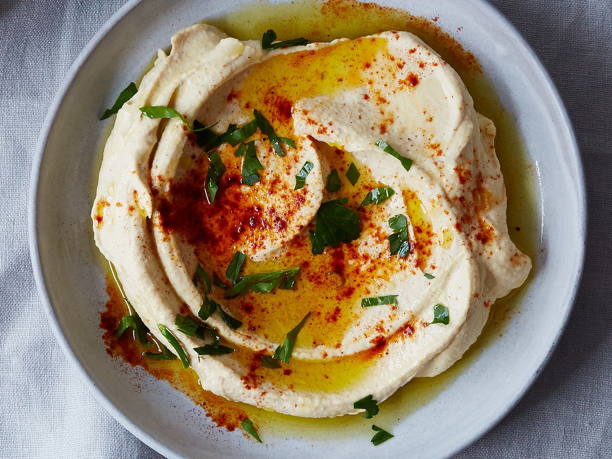

Israeli Hummus, whipped

What is Hummus
To some degree it depends on who you ask, but mostly Israeli-style hummus is smoother and creamier than most of the hummus you find in your grocery store. It has a lot more tahini — a paste made from sesame seeds — in it than some other Middle Eastern varieties of hummus
Steps
1/2 pound dried chickpeas
1 tablespoon baking soda
7 large garlic cloves, unpeeled
1/2 cup extra-virgin olive oil
1/4 teaspoon ground cumin, plus more for garnish
1/2 cup tahini, at room temperature
1/4 cup plus 1 tablespoon fresh lemon juice
Kosher salt
Paprika, for garnish
1/4 cup chopped parsley
Pita bread, for serving